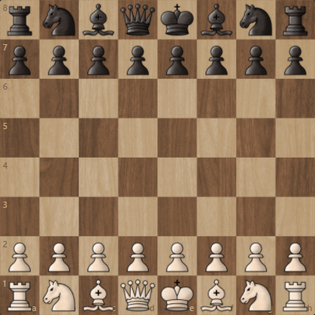
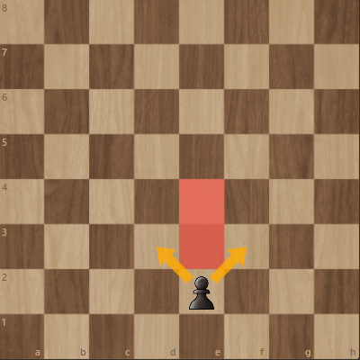
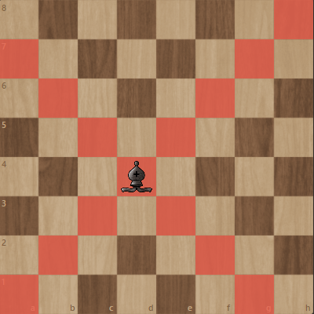
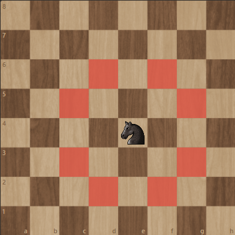
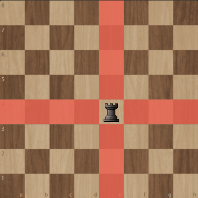
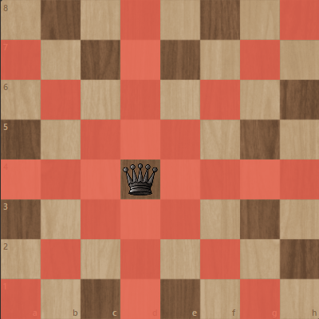
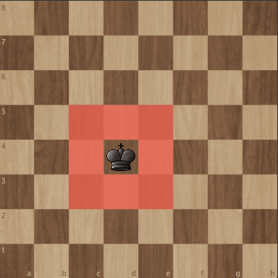
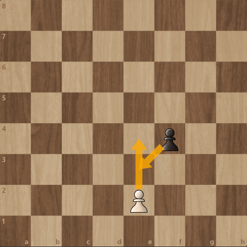
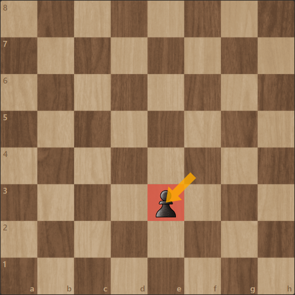

|
|
|
|
Reguli generale
Regulile oficiale ale jocului sunt întreținute de Federația Internațională de Șah sau FIDE.
Jocul se desfășoară pe tabla de șah. Aceasta are o formă pătrată și este împărțită în 8 linii și 8 coloane ce formează 64 de pătrate cu suprafețe egale, numite câmpuri colorate alternativ în alb și negru.
La început fiecare jucător are 16 piese: 8 pioni, 2 turnuri (ture), 2 cai, 2 nebuni, un rege și o regină (damă).
Unul dintre jucători controlează piesele albe iar celălalt piesele negre. Jucătorii mută pe rând, respectând anumite reguli; prima mutare (începutul partidei) revine jucătorului cu piese albe.
Scopul jocului este obținerea matului. Acesta survine atunci când un rege este atacat și nu poate evita capturarea.

Mutări
Fiecare piesă de șah are propriul mod de a fi mutată.
Căsuțele marcate în diagramele de mai jos cu un pătrat rou reprezintă mișcările posibile ale piesei prezentate, doar dacă între poziția inițială și cea finală nu există alte piese (inclusiv piese proprii); calul nu este restricționat de această cerință - de altfel, pentru acesta pozițiile inițială și finală nu sunt de-a lungul unei direcții specifice.
Dacă o piesă a adversarului se găsește pe poziția finală a mutării, atunci acea piesa este capturată.
Singura excepție o face pionul care poate captura numai deplasându-se pe diagonală, în față.






Mutări specialeRocada-O singură dată în decursul unei partide, fiecărui rege i se permite o mutare specială numită rocadă. Rocada constă în mutarea regelui două câmpuri spre tură, apoi mutarea turei de partea opusă regelui. Rocada poate fi mică, când mutarea se face cu tura mai apropiată regelui, sau mare când mutarea este făcută cu tura mai îndepărtată. Această mutare specială este permisă doar când se îndeplinesc anumite condiții:
En passant (în trecere) este mișcarea specială în care un pion este capturat de un alt pion oponent, imediat după ce primul s-a deplasat două pătrate din poziția de start (până în dreptul pionului oponent) și care ar fi putut oricum să fie capturat dacă s-ar fi deplasat doar un pătrat.
Poziția rezultată după această mutare e similară cu poziția mutării și capturii normale a pionului.
Mutarea en passant trebuie făcută imediat după mutarea pionului, în caz contrar se pierde dreptul de a o mai face.


PromovareaPromovarea se realizează în momentul în care un pion avansează până la ultima linie accesibilă lui (a opta pentru alb, prima pentru negru). În acea poziție, jucătorul are obligația de a schimba imediat pionul cu o piesă la alegere dintre regină, tură, cal sau nebun de aceeași culoare. În majoritatea cazurilor pionul este promovat în regină, dar întrucât mutările calului nu pot fi efectuate de regină, promovarea în cal este folositoare în anumite situații, mai ales când se obține șah sau o furcă. |
|---|